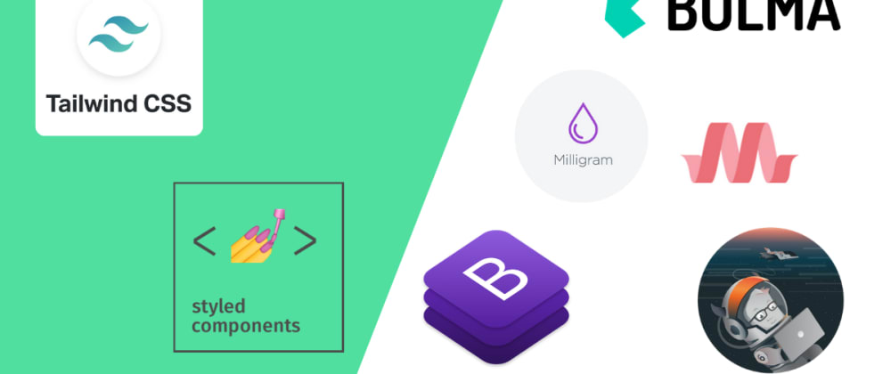

Proposito del sitio
Esta web tiene como objetivo, brindar información general
relacionada con los estilos CSS y como estos han evolucionado con el
paso del tiempo para convertirse en pieza clave del diseño web,
ofreciendo soluciones para armonizar tipografías, formateo de
imagenes y texto y modificar graficamente cualquier objeto insertado
en una pagina web.
Hojas de estilo en cascada
CSS viene de las iniciales de "Cascading Style Sheets", que
traducimos por "Hojas de estilo en cascada". Es el segundo
lenguaje más esencial para crear páginas web. El primero sería
HTML, con el que se define el contenido de la página. El segundo
CSS, con el que se define la parte de la presentación, es decir,
cómo deben mostrarse los elementos de la página, su posición,
forma, espaciados, colores y en resumen, toda la parte estética.
CSS no tiene ningún sentido sin HTML, igual que a día de hoy HTML
sin CSS también resultaría imposible, ya que la web ha
evolucionado de tal forma que su aspecto es fundamental y el CSS
es la única vía para conseguir personalizarlo.
Partes principales del CSS
Para desarrollar con CSS tenemos que trabajar con una
serie de elementos, mediante los cuales se declaran los estilos,
básicamente éstos son los más importantes:
- Selectores, mediante
los cuales podemos especificar qué elementos de la página nos
estamos refiriendo
- Atributos de estilo para definir qué cosas
queremos estilizar sobre los selectores indicados
- Una serie de
valores, que indican qué estilo se debe aplicar a cada atributo
sobre cada selector. Los valores se expresan con unidades CSS, que
sirven para cuantificar los valores (píxeles, puntos...)
Aprender
CSS no es difícil. Básicamente se trata de entender esos
componentes principales y conocer las posibles variantes que
existen para conseguir los estilos que necesitamos. Por supuesto,
también tiene una buena parte de creatividad, pero la mayoría de
las veces el diseño lo entregan previamente antes de desarrollar
una web, por lo que en realidad lo que más requiere es un
conocimiento técnico.

Cuando se usa profesionalmente CSS se deben
tener en cuenta muchos detalles y buenas prácticas, como la
organización del código, la reutilización, la optimización, etc.
que básicamente están tratados en los manuales y artículos que
encontrarás en DesarrolloWeb.
Frameworks CSS
Los frameworks CSS, a veces también llamados frameworks
de diseño son herramientas que nos permiten implementar
un marco de trabajo sólido sobre el que desarrollar la parte
estética de los proyectos web. Ofrecen diversas ventajas, entre
las que destacan dos principales:
- La agilidad para la generación de los estilos CSS y el aspecto estético de los sitios y aplicaciones web.
- La creación de un tema gráfico, que se puede mantener a lo largo de todo un sitio o aplicación,
generando una mayor consistencia en el diseño.
Los frameworks CSS permiten por tanto un desarrollo optimizado, que además es muy útil en proyectos
empresariales,
donde sea necesario seguir una misma línea de diseño por varios desarrolladores.
Dentro del mundo de los frameworks CSS encontramos dos tipos principales
Frameworks basados en componentes: que ofrecen una base de código CSS que permite crear fácilmente,
por medio de clases, multitud de componentes como botones, listas, pestañas, menús desplegables,
formularios estilizados, etc. Dentro de esta clasificación el framework más relevante es Bootstrap.
Frameworks basados en clases de utilidad: también llamados "utility first frameworks", que ofrecen
una cantidad enorme de clases de utilidad atómicas, pensadas para aplicar un valor concreto a una
propiedad determinada del CSS. Una clase de utilidad por si sola hace poco (podría ser
simplemente un margen de 1 rem en la parte de abajo), pero mediante la combinación de
diversas clases de utilidad se pueden genera todo tipo de interfaces de usuario
totalmente personalizadas. Dentro de esta clasificación encontramos Tailwind CSS.
La ventaja de los frameworks basados en componentes es que te dan mucho trabajo
de estilos ya prefabricados, con temas de diseño muy definidos. Sin embargo, los
frameworks basados en componentes en ocasiones también representan algunas desventajas,
como mayor rigidez a la hora de desarrollar y dificultad para conseguir que el diseño
de varios proyectos que usan el mismo framework se distingan unos de otros.
La ventaja de los frameworks basados en clases de utilidad es que el diseño que se
consigue con ellos es totalmente único para cada sitio web, pero sin embargo la desventaja
es que usan muchas clases para poder aplicar estilo a los elementos de la página.

Referencias
CSS. (2019, 27 agosto). Desarrollo Web. https://desarrolloweb.com/home/css
Jablečník, M. (2021, 9 agosto). Best CSS frameworks in 2021. DEV Community. https://dev.to/mjablecnik/best-css-frameworks-in-2021-1fb5
Karvounis, N. (2017, 17 septiembre). Photo by Nick Karvounis on. Unsplash. https://unsplash.com/photos/TkZYCXmrKK4
COn la realización de esta actividad se comprenden los conocimientos necesarios para organizar las etiquetas del
codigo html de nuestra pagina Web.
Tambien fue posible comprender la relevancia de las hojas de estilo CSS para el desarrollo web moderno y como los
Frameworks adquieren mayor protagonismo para los desarrolladores.